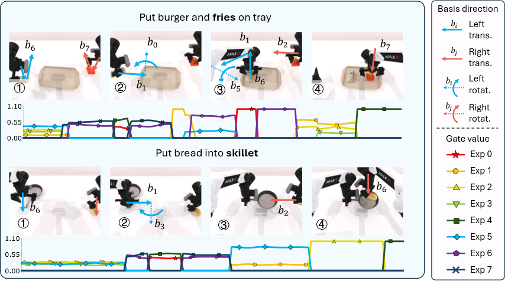
Ce Hao
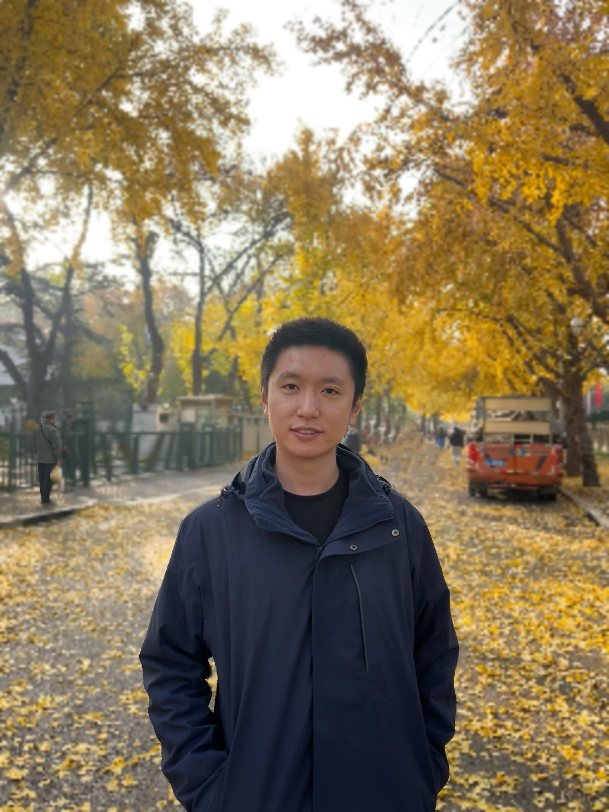
Ce Hao (郝策)
Assistant Professor · Zhongguancun Academy
I am Ce Hao, and I joined Zhongguancun Academy as an Assistant Professor in 2026. My research focuses on bimanual mobile robot manipulation and the dynamics and locomotion of quadrupedal and humanoid robots.
I graduated with a PhD from the National University of Singapore, supervised by Prof. Harold Soh . Before NUS, I studied at the University of California, Berkeley as a PhD student in Prof. Masayoshi Tomizuka's lab. I obtained MS and BS degrees from Beihang University, supervised by Prof. Jia Song.
News
- 2026-01 SkillMoEPolicy (SMP) was accepted to ICLR 2026.
- 2026-01 VFP and APREBot were accepted to ICRA 2026.
- 2025-12 REBot was accepted to RA-L 2025.
- 2025-10 Force-VLA was accepted to NeurIPS 2025.
- 2025-07 CHD was accepted to CoRL 2025.
- 2025-06 DISCO was accepted to RA-L 2025.
Join My Group
We are looking for motivated students and collaborators. Our group works on TOPICS (e.g., robotic manipulation, perception, learning).
Open Roles
- PhD students: strong coding (Python/C++), ML background, and research mindset.
- Master/Undergrad RAs: 10–15 hrs/week; solid engineering; open to publications.
- Visitors/Interns: 3–6 months; project-focused collaboration.
How to Apply
Email you@example.com with: 1) CV, 2) transcript, 3) short paragraph on research interests, 4) links to code/papers.
Contact
Email: cehao@u.nus.edu
Email: haoce@bza.edu.cn
Office: Building C9, Zhongguancun Academy, Beijing, China
Research Projects
* Equally contributed, ✝ corresponding author.


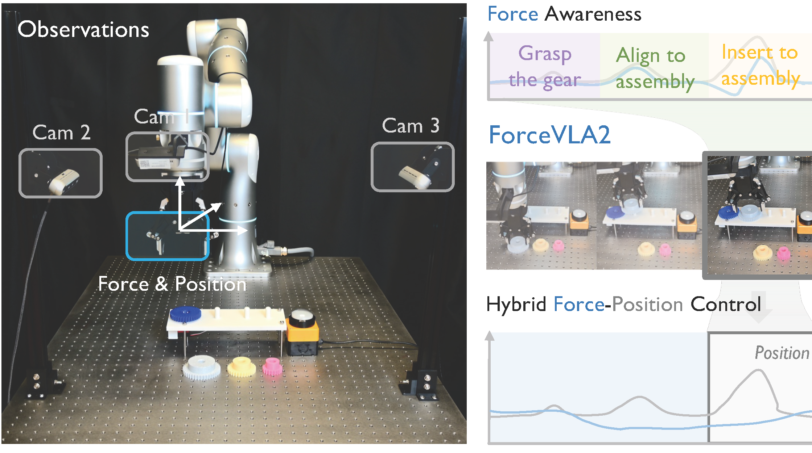
ForceVLA2: Unleashing Hybrid Force-Position Control with Force Awareness for Contact-Rich Manipulation
Hongquan Zhang, Jinda Du, Yunsong Zhou, Jia Zeng, Ce Hao, Jieji Ren, Qiaojun Yu, Cewu Lu, Yu Qiao, Jiangmiao Pang

SkillVLA: Tackling Combinatorial Diversity in Dual-Arm Manipulation via Skill Reuse
Xuanran Zhai, Zekai Huang, Longyan Wu, Qianyou Zhao, Qiaojun Yu, Jieji Ren, Ce Hao, Harold Soh
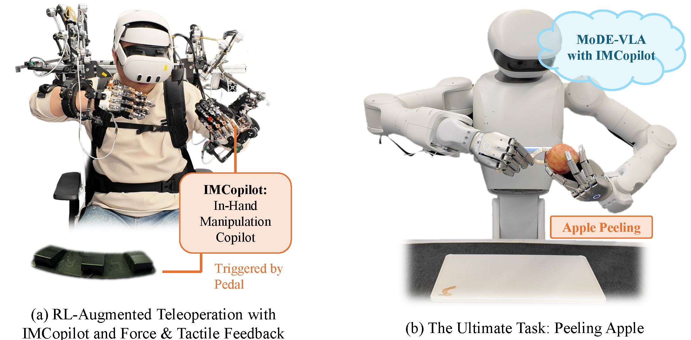
Towards Human-Like Manipulation through RL-Augmented Teleoperation and Mixture-of-Dexterous-Experts VLA
Tutian Tang, Xingyu Ji, Wanli Xing, Ce Hao, Wenqiang Xu, Lin Shao, Cewu Lu, Qiaojun Yu, Jiangmiao Pang, Kaifeng Zhang


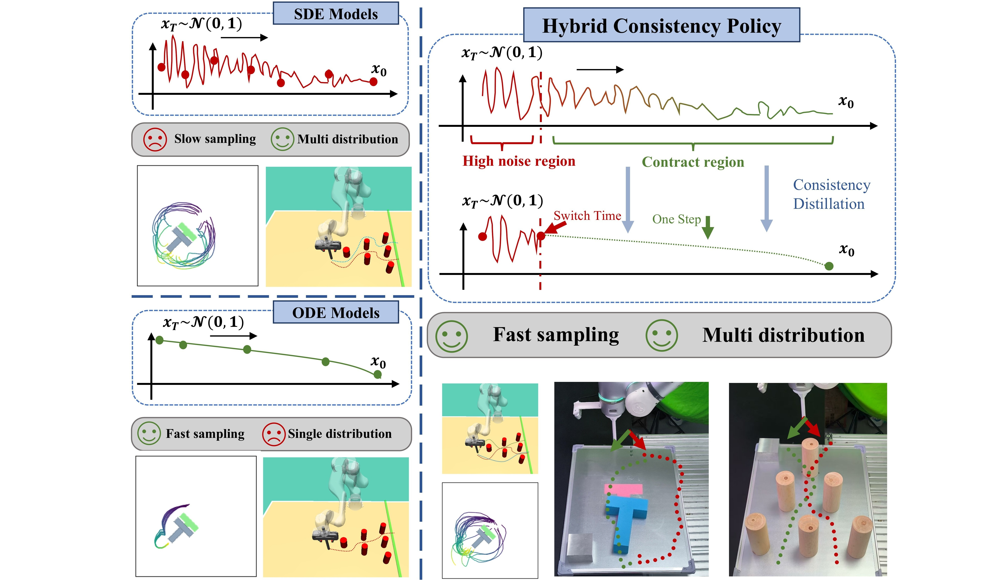
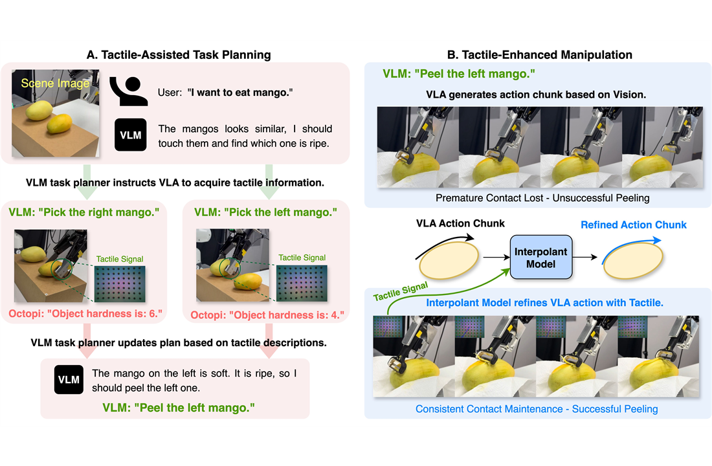

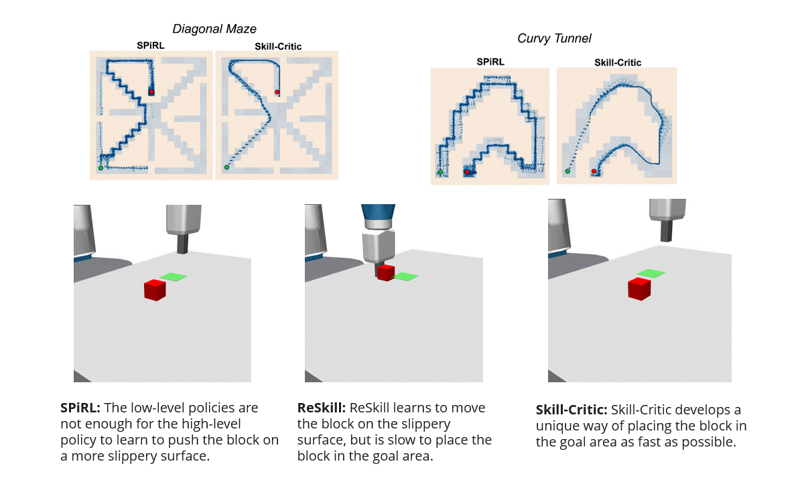

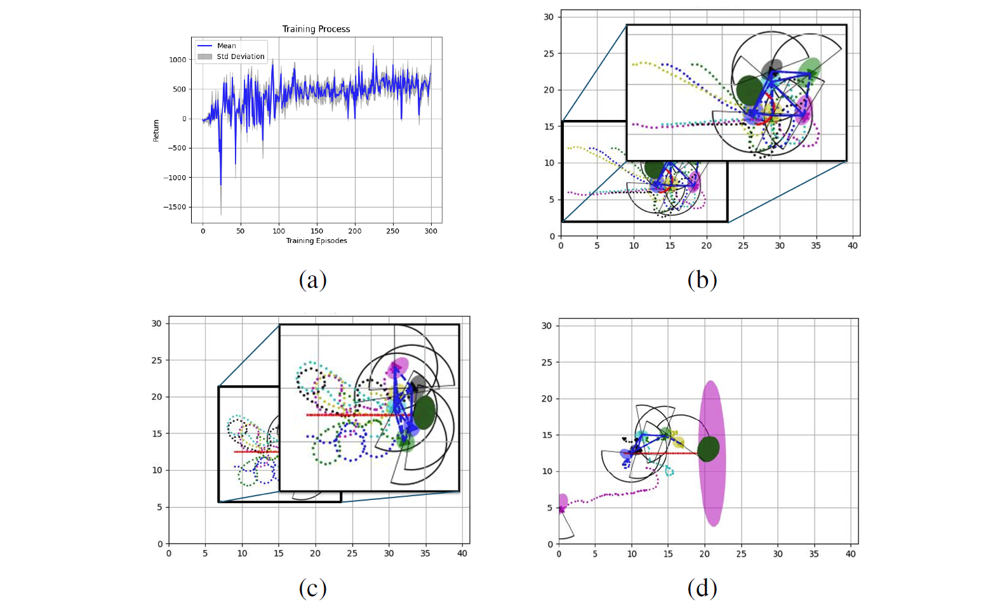
Deep Reinforcement Learning Based Distributed Active Joint Localization and Target Tracking
Dongming Wang, Shaoshu Su, Wei Ren, Ce Hao
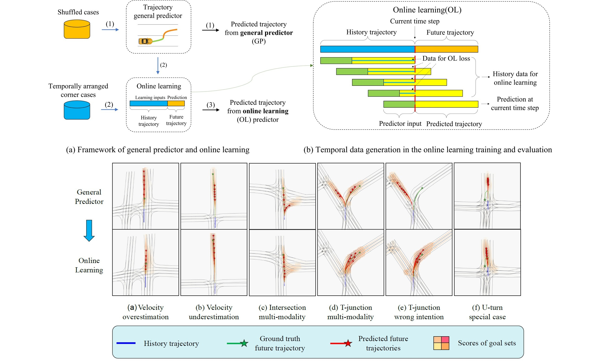
Improving Vehicle Trajectory Prediction with Online Learning
Ce Hao, Yuying Chen, Siyuan Cheng, Hongbo Zhang
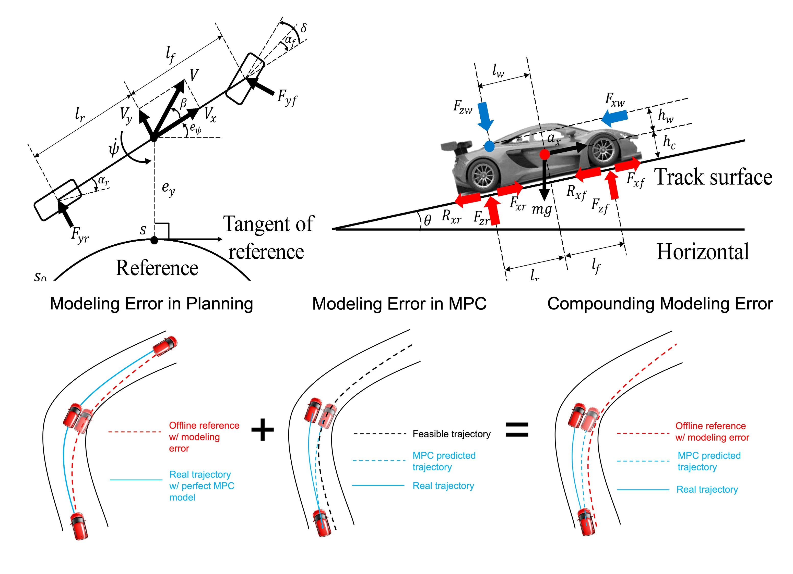
Double-Iterative Gaussian Process Regression for Modeling Error Compensation in Autonomous Racing
Shaoshu Su, Ce Hao, Catherine Weaver, Chen Tang, Wei Zhan, Masayoshi Tomizuka

Outracing Human Racers with Model-based Planning and Control for Time-Trial Racing
Ce Hao, Chen Tang, Eric Bergkvist, Catherine Weaver, Liting Sun, Wei Zhan, Masayoshi Tomizuka
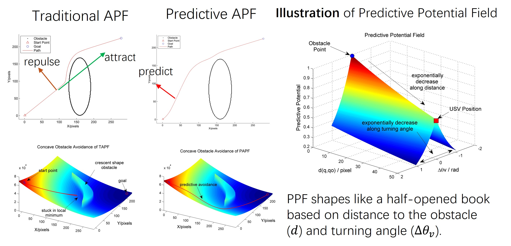
Path Planning for Unmanned Surface Vehicle Based on Predictive Artificial Potential Field
Ce Hao, Jiangcheng Su, Jia Song